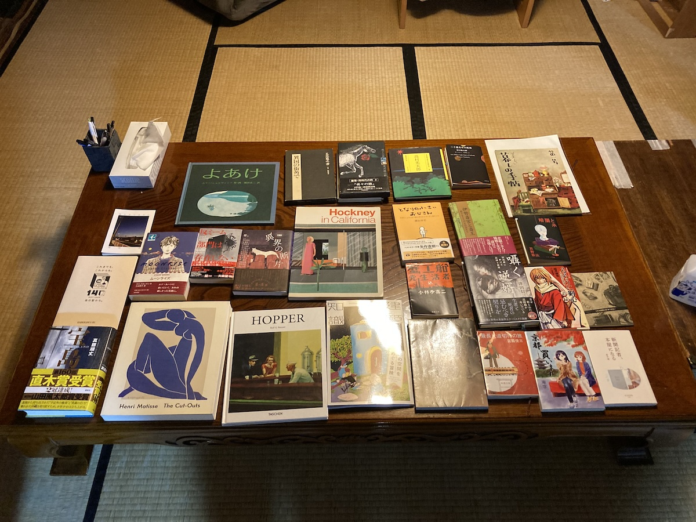

本の会2026 ＜ 本の会 ＜ TOP
#89 2026/9/27 18:00-20:00 10人

- 真藤順丈『宝島』（講談社）
- グン・アヨルザナ／著 阿比留美帆／訳『シュグデン』（春秋社）
- クラスナホルカイ・ラースロー／著 早稲田みか／訳『サタンタンゴ』（国書刊行会）
- 落合博『新聞記者、本屋になる』（光文社）
- 和月伸宏『るろうに剣心語録』（集英社）
- 三津田信三『囁く逆婿』（KADOKAWA）
- 白樺あじと『これは探偵の仕事ではない』（しーらかんすばかんす）
- 君野新汰『暗闇と糸』（こたつや）
- 庵字『京都買います』（きょうとかいます）
- 小林多喜二『蟹工船・党生活者』（新潮社）
- 「建築知識 ２０２６年１０月号」（エクスナレッジ）
- サラ・クロッサン／作 三辺律子／訳『ムーンライズ』（岩波書店）
- ｑｎｔｍ／著 鳴庭真人／訳『反ミーム部門は存在しない』（早川書房）
- 梨／編『異界の断片』（平凡社）
- 稲田一声『鶏の祈り永久に』
- 瀬知洋司『となりの小さいおじさん』（アルソス）
- さとうみつろう『神さまとのおしゃべり』（ワニブックス）
- 宮脇俊三『最長片道切符の旅』（新潮社）
- Rolf G. Renner『HOPPRER』（TASCHEN）
- Henri Matisse『The Cut-Outs』
- 『Hockney in California』
- 大橋弘一『鳥たちの素敵な名前の物語』（文一総合出版）
- 榎村寛之『伊勢斎宮と斎王』（塙書房）
- ユリー・シュルヴィッツ／作・画 瀬田貞二／訳『よあけ』（福音館書店）
- 五木寛之『異国の街角で』（文藝春秋）
- 天沢退二郎『夜々の旅』（河出書房新社）
- 『日本語を味わう名詩入門 ８ 高村光太郎』（あすなろ書房）
- 谷川俊太郎『二十億光年の孤独』（集英社）
- 「美しい暮しの手帖 第一号」（暮しの手帖社）